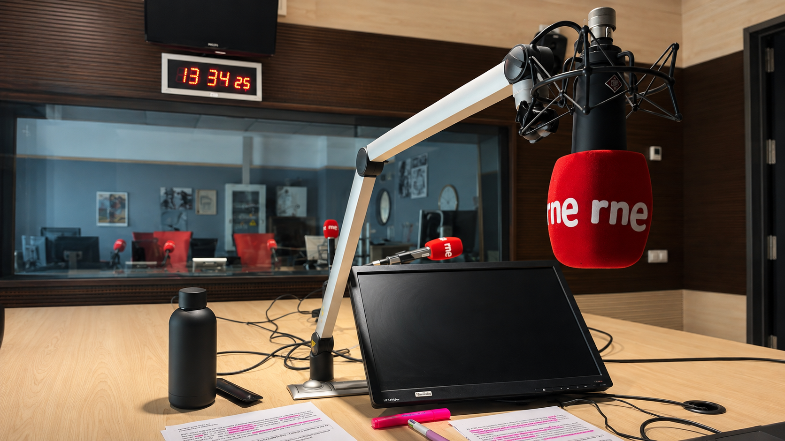

Erica Arredondo
Periodista cultural e internacional especializada en narrativas multimedia, reporterismo y contenido digital.
Trabaja conmigo
Sobre mí
Soy redactora y creadora de contenido cultural e internacional con experiencia en grandes medios y entornos digitales como RTVE y revistas especializadas.
Mi trabajo se centra en la creación de narrativas multimedia en formato texto, audio y vídeo, combinando reporterismo, análisis cultural, verificación de datos y estrategia de contenidos.
Líneas de Trabajo
Narrativas audiovisuales
Música
Cine
Literatura
Geopolítica cultural
Conflictos y patrimonio cultural
Reportaje documental
Trabajos
Texto
Artículos
Selección de piezas publicadas en RTVE sobre internacional, cultura y actualidad, con reporterismo, contexto y mirada cultural.
Ver artículosRadio
Audio
Programas radiofónicos para Radio Clásica que conectan música, narrativa sonora y divulgación cultural contemporánea.
Escuchar audioInvestigación
Proyectos
Reportajes de largo aliento, investigaciones en desarrollo y materiales descargables vinculados a memoria, conflicto y cultura.
Ver proyectosHabilidades
Contenidos, redacción y periodismo
- Redacción de noticias, reportajes, análisis y entrevistas.
- SEO editorial y titularización.
- Fact-checking y verificación.
- Cobertura de actualidad, eventos y ruedas de prensa.
- Edición y corrección de textos.
- Producción de radio / podcast.
- Adaptación de contenidos a web, audio, vídeo, newsletters y redes sociales.
Herramientas
- Microsoft Office (Word, Powerpoint).
- Adobe Premiere Pro.
- Adobe Photoshop.
- CapCut.
- Audacity.
- Google Analytics.
- Metricool.
- CMS: B-Cube, SalesForce, WordPress.
Idiomas
- Español (nativo).
- Inglés (B2).